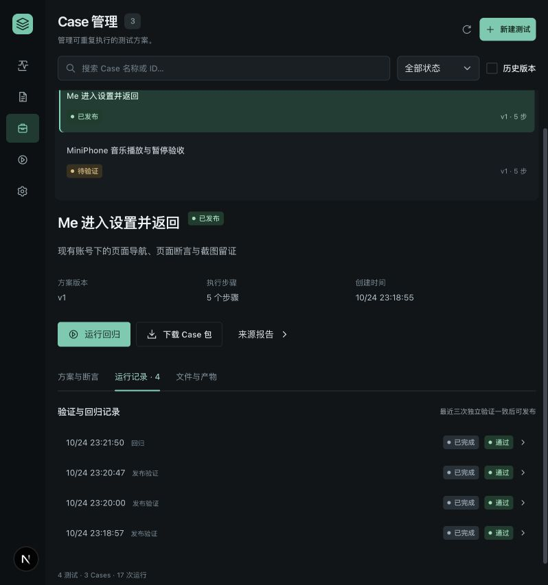
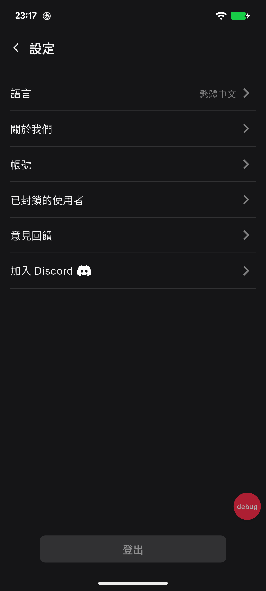
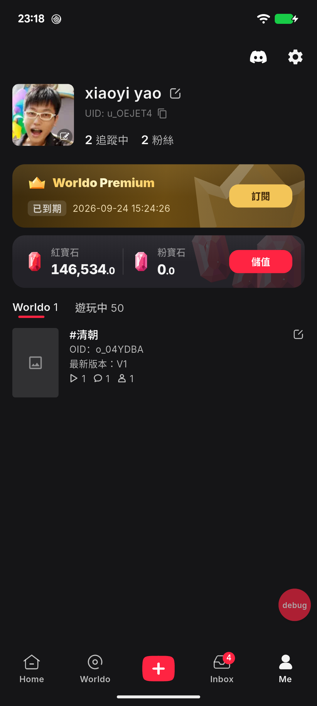

GENESIS AI TEST LAB · 实机流程验收 · 2026-10-24 · 北京时间
主流程通过，探索判定与报告展示有三处改进项
已通过平台界面完整执行“Me → Settings → 返回 Me”：AI 探索、报告确认、Case 固化、三次独立验证、发布、正式回归及 Case 包下载。
本次最终业务场景通过；平台主流程验收通过并保留改进项。未发现阻止该场景闭环的故障。三处问题均出现在探索与结果解释阶段，详见下方证据。
4 / 4独立验证与回归通过
5 步固化方案，含 4 条断言
36.3 秒四次固定执行平均耗时
3 项平台改进建议
执行范围与环境
设备：Pixel 6，Android 17，1080 × 2400。应用：com.worldo.ai，版本 9.9.9（999），当前语言为繁体中文。使用设备已有账号与数据，探索模型沿用平台配置 gpt-6.1-sol。
任务从 23:15:05 开始，最终回归于 23:22:27 完成，总历时约 7.4 分钟，包含检查报告与界面操作间隔。AI 探索至报告及清理完成耗时 208.4 秒。以下重跑耗时按各运行的实际开始、结束时间计算，包含启动、取证、操作、断言和清理。
手机操作全部由平台执行器实施。通过平台界面完成创建、确认、固化、验证、发布和回归；原始记录用于交叉核对。账号及缓存保留，最终停留在 Me 页面；四次运行均有成功清理回执，设备占用记录为 0。
阶段结果
| 阶段 | 实际结果 |
|---|
| AI 探索与报告 | 完成 7 条记录：4 条断言通过、2 条探索检查失败、1 条纯导航。AI 自行纠正定位与超时问题并生成报告。 |
| 方案确认与固化 | 保留实际有效路径 s2 → s3 → s5 → s6 → s7；原始失败记录保留。设置齿轮转为图像模板定位，其余操作使用页面语义。 |
| 三次独立验证 | 同一 Case 包、同一 APK 身份；每次保留数据重新启动 App，完整执行 5 步并清理。三次通过后界面出现“发布 Case”。 |
| 发布与正式回归 | Case 已发布，固定执行器回归通过。该执行路径不调用探索 AI，也不更改脚本或业务预期。 |
| 导出与完整性 | 下载接口成功返回 tar.gz，内含 9 个文件。8 个内容文件逐一 SHA-256 匹配 manifest，与本次运行引用的 Case 包一致。 |
三次验证与一次回归
| 运行 | 北京时间 | 耗时 | 结果 | 覆盖 | 清理 |
|---|
| 独立验证 1 | 23:18:57–23:19:33 | 35.6 秒 | 通过 | 5 / 5 步 · 4 / 4 断言 | 完成 |
| 独立验证 2 | 23:20:00–23:20:37 | 37.0 秒 | 通过 | 5 / 5 步 · 4 / 4 断言 | 完成 |
| 独立验证 3 | 23:20:47–23:21:24 | 36.6 秒 | 通过 | 5 / 5 步 · 4 / 4 断言 | 完成 |
| 发布后回归 | 23:21:50–23:22:27 | 36.1 秒 | 通过 | 5 / 5 步 · 4 / 4 断言 | 完成 |
设置按钮点击本身记为“已操作”，由随后 Settings 标题断言确认页面结果，因此每次为 5 个步骤、4 条断言。

平台界面回读：Case「Me 进入设置并返回」已发布，运行记录均通过。
本次发现
P2 · F1未基于可用页面树选择定位字段
探索 s1 以 text=Me 检查，但 Me 实际在 description 字段中，误记为失败；s2 自行纠正。
建议：页面树可用后再选择准确字段；将无法建立可靠定位标记为工程诊断。
P2 · F2观察窗口短于页面树采集耗时
s4 timeoutMs=1000，唯一采样为 true，步骤总耗时 2.853 秒，最终 failed；s5 保持同一预期、改为 15000ms 后 passed。
建议：给 UI 检查提供符合采集耗时的窗口，并将采集超窗与真实业务失败分开表述；性能目标应单独定义。
P2 · F3最终结果与累计失败统计不一致
最终报告正文为测试通过，但顶部仍显示 2 功能未通过；这两条分别是定位字段错误和采集超窗。
建议：分别展示最终业务结论、已恢复的探索尝试和执行故障，保留原始记录。
以上问题已记录，未在本次验收中修改平台或 App 源码。AI 的后续补验保留了相同业务预期；原始失败与正确结果均保留，未将旧失败记录改写为通过。
页面证据与适用边界

Settings：实际“設定”标题存在，15 秒观察窗口内断言通过。
返回 Me：底部入口与当前账号 UID 均有独立存在性断言。这次证明的是当前手机、当前 APK、繁体中文界面和当前账号下的页面导航闭环。最后一条断言绑定当前账号 UID；换账号或语言后需要重新确认方案。图像模板依赖当前屏幕与布局，本次未验证跨设备、跨尺寸、换 APK、异常恢复、取消操作、权限弹窗、完整页面视觉一致性或其他业务模块。
App 来源分支与提交号未从手机安装包中取得，不能将本次通过自动归属于工作区当前源码。业务预期是页面正确显示；本次 15 秒观察窗口用于可靠采集，不能视为启动或页面性能 SLA。
报告附件
运行身份与原始结果
Task：task-411aa9ad-ef56-475f-96b7-c41f9a566091
Case：case-84cde67a-c4d6-4da9-9e44-55cdd101b3e5
Case SHA-256：d9cede7be84a7366b499603ef12367b8c716096613fc2504745426ded3220750
APK SHA-256：e95764932669e7b70da8bd1634d31d923ff1ad8e2d8abda6e4584924bfc6c311
发布时间：23:21:45（北京时间）
- run-8e5e195a-e916-4591-a203-ab8704b1b316 · verify
- run-60e2d959-2ab5-45e5-bedb-532a71a6ef6a · verify
- run-abb2ed3e-acce-4765-9e6d-19da577b13c7 · verify
- run-da72c400-c4e8-4be3-bd07-921410dd1d41 · regression
最终回归的原始 PNG、XML、观测时间与音轨摘录保存在同目录 regression-evidence/。